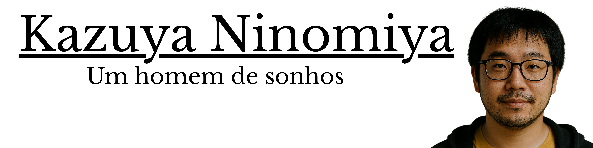

A música é muito mais do que som; é a linguagem universal que conecta gerações, atravessa fronteiras e traduz sentimentos que as palavras, sozinhas, não alcançam. Foi sob essa premissa que nasceu o Kamusic. Nossa história começa em Belo Horizonte, no coração de Minas Gerais, através da visão de Kazuya Ninomiya. Filho de imigrantes japoneses e movido por uma paixão genuína que floresceu desde sua juventude em 1980, Kazuya sempre acreditou que a educação musical deveria ser acessível a todos. O que começou como um projeto simples e heróico, mantido por anos com o suor de seu trabalho como caixa de supermercado, transformou-se hoje em um portal vibrante dedicado à memória e ao futuro da arte sonora. No Kamusic, nossa missão é ser a ponte entre o passado glorioso dos grandes compositores e a energia das novas gerações. Acreditamos que entender a trajetória de um autor ou a evolução de um gênero musical enriquece a experiência de quem ouve. Por isso, investimos em uma plataforma que une o rigor histórico à dinâmica do público jovem, oferecendo não apenas conteúdo educativo de alta qualidade, mas também uma curadoria exclusiva de produtos que celebram o universo musical. Do estudo acadêmico ao prazer de colecionar, o Kamusic é o ponto de encontro para quem não apenas escuta música, mas a vive intensamente. Seja bem-vindo ao nosso espaço, onde cada nota tem uma história para contar.